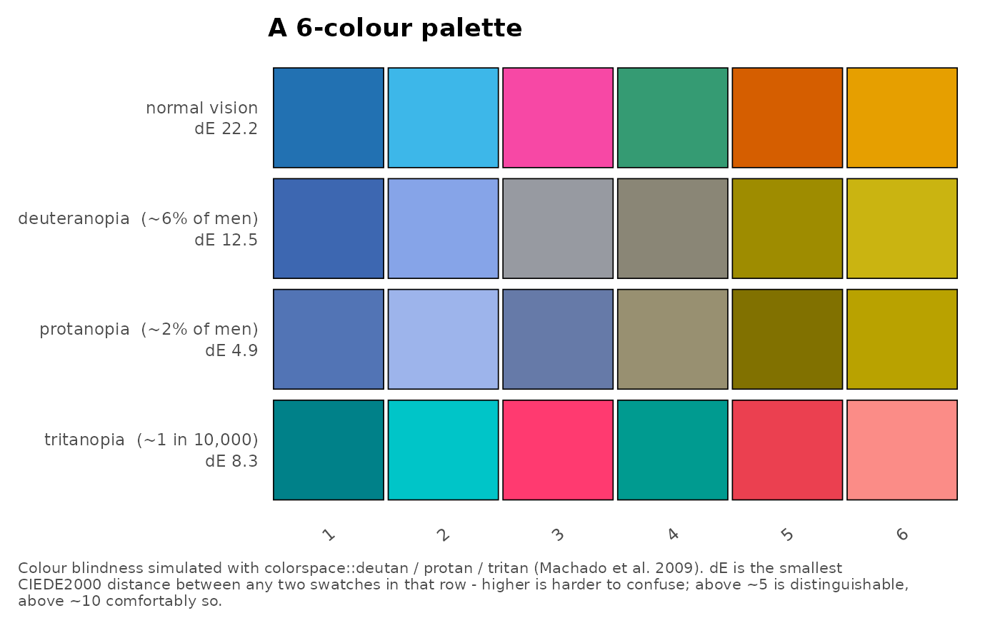

Show how a set of palettes reads under colour blindness
Source:R/colour_blindness.R
plot_colour_blind_check.RdDraws each palette once per vision type – normal, deuteranope, protanope, tritanope – with the worst-case CIEDE2000 distance for that row, so an accessibility claim about a figure can be shown rather than asserted. Pass the colour maps a figure actually uses (one per legend) and the panels come out in the order given.
Usage
plot_colour_blind_check(
palettes,
subtitles = NULL,
title = NULL,
caption = TRUE,
vision = c("normal", "deutan", "protan", "tritan"),
show_distance = TRUE,
base_size = 11,
label_angle = 40
)
plot_color_blind_check(
palettes,
subtitles = NULL,
title = NULL,
caption = TRUE,
vision = c("normal", "deutan", "protan", "tritan"),
show_distance = TRUE,
base_size = 11,
label_angle = 40
)Arguments
- palettes
A named list of colour vectors – one entry per legend in the figure being checked, e.g.
list("Region colours" = region_cols, "Components" = k_cols). A bare colour vector is treated as a single unnamed palette.- subtitles
Optional character vector, one per palette, describing where each is used (e.g.
"UMAP points and the strip over each admixture panel").- title
Overall figure title;
NULLfor none.- caption
Explanatory caption under the figure:
TRUE(default) for the standard note on method and how to read the numbers,FALSEfor none, or your own string.- vision
Vision types to draw, from
"normal","deutan","protan","tritan".- show_distance
Put the worst-case distance in each row label (default
TRUE).- base_size
Base font size.
- label_angle
Angle for the swatch labels (default
40; use0for short names).
Value
A patchwork::patchwork object; ggplot2::ggsave() or save_plot() it.
Details
Names carry through: a named colour vector labels its swatches, and the names of
palettes become the panel titles.
Examples
plot_colour_blind_check(list("A 6-colour palette" = color_palette(6)))
